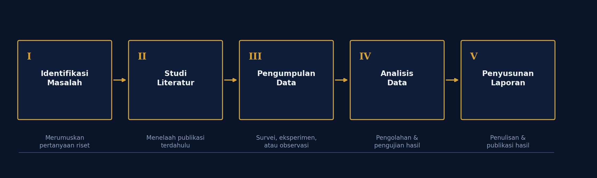

Bidang Keahlian
Berikut adalah bidang keahlian dosen sesuai dengan kelompok bidang riset utama.
-
Prof. Dr. Ir. Indrabayu, ST., MT., M.Bus.Sys., IPM, ASEAN. Eng.
- Artificial Intelligence
- Data Mining
- Multimedia Analytic
-
Dr. Ir. Zahir Zainuddin, M.Sc.
- Computer System
- Artificial Intelligence
-
Prof. Dr. Ir. Amil Ahmad Ilham, S.T., M.IT.
- Cybersecurity
- Computer Network
- Big Data
Daftar Publikasi
Rekapitulasi publikasi tiga dosen tetap Departemen Teknik Informatika Unhas periode 2023–2025.
| No | Penulis | Rincian Publikasi | ||||
|---|---|---|---|---|---|---|
| Tahun | Judul | Media/Jurnal | Jenis | Link Akses | ||
| 1 | Prof. Dr. Ir. Indrabayu, S.T., M.T., M.Bus.Sys., IPM., ASEAN.Eng | 2023 | Real-time Lane Departure Warning with Cascade Lane Segmentation | Indonesian Journal of Electrical Engineering and Computer Science (IJEECS), Vol. 32, No. 2, pp. 994–1003 | Jurnal (Scopus) | https://doi.org/10.11591/ijeecs.v32.i2.pp994-1003 |
| 2024 | A Novel Approach of Hybrid Bounding Box Regression Mechanism to Improve Convergence Rate and Accuracy | International Journal of Intelligent Engineering and Systems (IJIES), Vol. 17, No. 2, pp. 723–735 | Jurnal (Scopus) | https://doi.org/10.22266/ijies2024.0430.57 | ||
| 2025 | Water Potability Classification System: Computational Cost Reduction Using RFECV and SelectKBest | Journal of Ecohumanism, Vol. 4, Issue 1 | Jurnal | https://doi.org/10.62754/joe.v4i1 (profil SINTA/Scopus) | ||
| 2 | Prof. Dr. Ir. Zahir Zainuddin, M.Sc. | 2023 | Web Server Load Balancing Mechanism with Least Connection Algorithm and Multi-Agent System | CommIT (Communication and Information Technology) Journal, Vol. 17, No. 2, pp. 245–258 | Jurnal (Scopus) | https://doi.org/10.21512/commit.v17i2.8872 |
| 2024 | An Intelligent Optimization Method for Evacuation Route Planning in the Occurrence of Natural Disasters | Engineering, Technology & Applied Science Research (ETASR), Vol. 14, No. 6, pp. 17696–17703 | Jurnal (Scopus) | https://doi.org/10.48084/etasr.8538 | ||
| 2025 | Entity Extraction in Indonesian Online News Using NER with Hybrid Transformer, Word2Vec, Attention, and Bi-LSTM | JOIV: International Journal on Informatics Visualization, Vol. 9, No. 3, pp. 964–973 | Jurnal (Scopus) | https://doi.org/10.62527/joiv.9.3.2902 | ||
| 3 | Prof. Dr. Ir. Amil Ahmad Ilham, S.T., M.IT. | 2023 | Improved Data Security Using Advanced Encryption Standard Algorithm on Long-Range Communication System at Smart Grid | Jurnal ilmiah (Isminarti, Ilham, Arief, Syafaruddin), pp. 504–508 | Jurnal/Prosiding | https://www.researchgate.net/publication/369453664 |
| 2024 | Soft Voting Classifier with Optimized Weight Using PSO on Sentiment Analysis for Online Credit and Loan Application Reviews | International Journal of Innovative Computing, Information and Control (IJICIC), Vol. 20, No. 2, pp. 359–372 | Jurnal (Scopus) | https://doi.org/10.24507/ijicic.20.02.359 | ||
| 2025 | Convolutional Neural Network Architectural Models for Multiclass Classification of Aesthetic Facial Skin Disorders | International Journal of Advanced Technology and Engineering Exploration (IJATEE), Vol. 12, No. 122, pp. 112–131 | Jurnal (Scopus) | https://doi.org/10.19101/IJATEE.2024.111101077 | ||
| Total: 3 Dosen — 9 Judul Publikasi (Tahun 2023, 2024, dan 2025) | ||||||
Metodologi Riset
Tahapan riset yang secara umum diikuti, dari perumusan masalah hingga publikasi hasil.

Deskripsi Riset
Riset di Departemen Teknik Informatika Universitas Hasanuddin mencakup berbagai bidang seperti kecerdasan buatan, data mining, keamanan siber, jaringan komputer, dan big data. Penelitian dilakukan secara sistematis — mulai dari identifikasi masalah, pengumpulan data, pengolahan & analisis, hingga menghasilkan solusi atau temuan penelitian — yang secara umum dapat digambarkan melalui diagram metodologi riset.